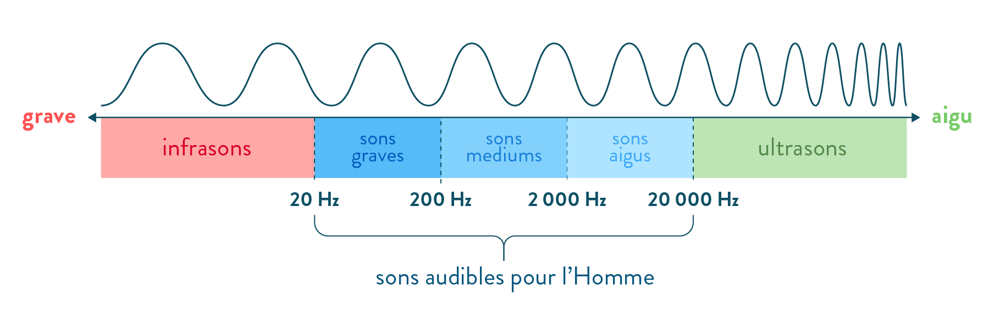
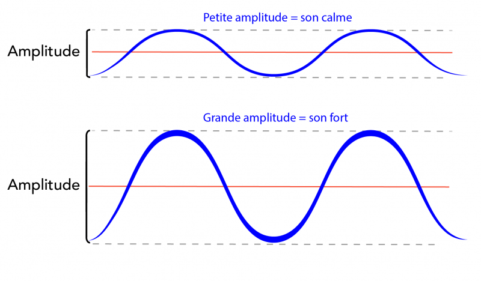
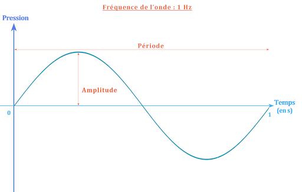
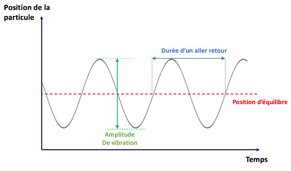
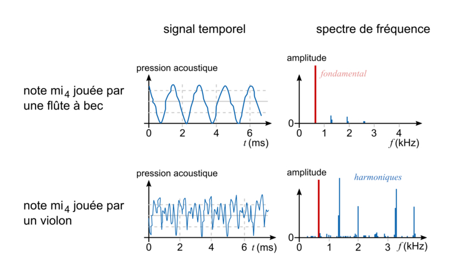
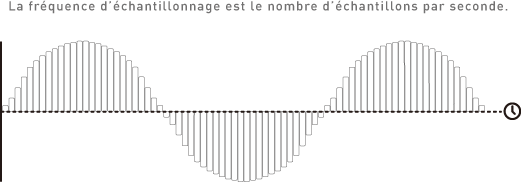
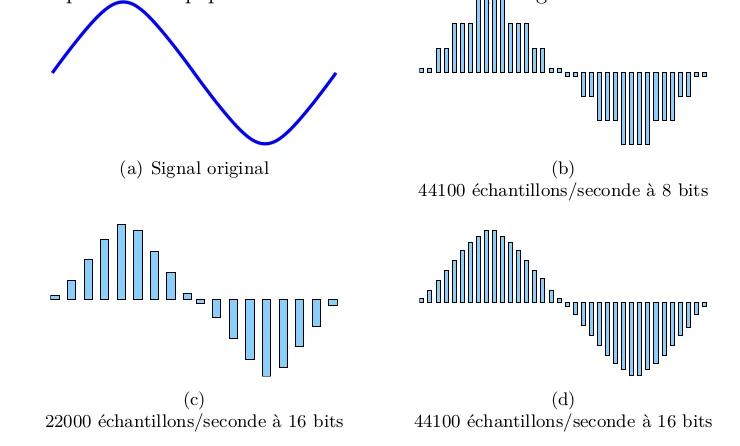
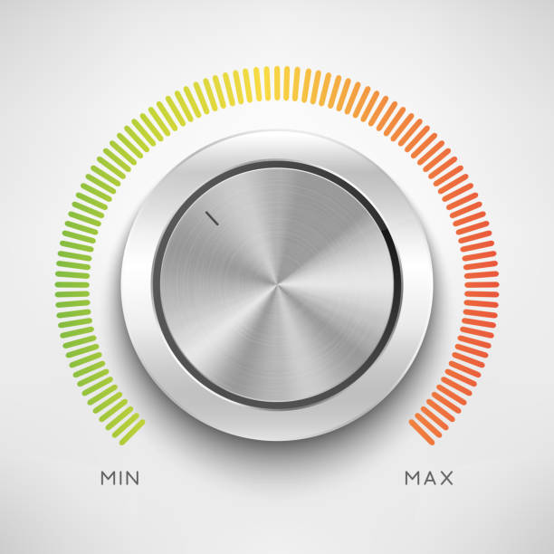
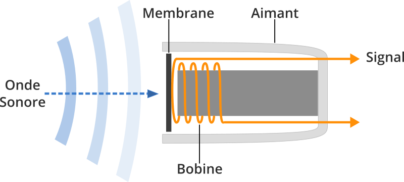
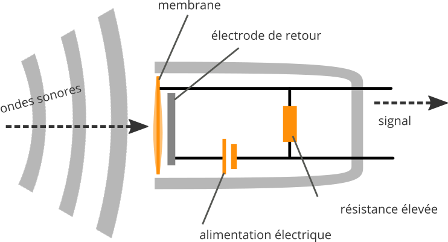

Cours 02
Le son, l'écoute et l'enregistrement audionumérique
1. Les propriétés du son
Le son est une vibration qui se propage dans l'air sous forme d'ondes.
A. La fréquence
La fréquence correspond au nombre de vibrations par seconde.
Elle est mesurée en Hertz (Hz).
Exemple
- 100 Hz = son grave
- 1000 Hz = son médium
- 10000 Hz = son aigu

Source: synthfood.frÀ retenir
✅ Plus la fréquence est élevée, plus le son est aigu.
✅ Plus la fréquence est basse, plus le son est grave.
B. L'amplitude
L'amplitude représente la force ou l'intensité du son.
Elle est mesurée en décibels (dB).
Exemple
- Chuchotement : environ 30 dB
- Conversation : environ 60 dB
- Concert rock : plus de 100 dB

Source: letstalkscience.caÀ retenir
✅ Une grande amplitude produit un son plus fort.
✅ Une faible amplitude produit un son plus faible.
C. La durée
La durée représente le temps pendant lequel un son est entendu.
Exemple
- Claquement de porte : courte durée
- Sirène : longue durée

Source: googleusercontent.com
Source: syos.comD. Le timbre
Le timbre est ce qui permet de distinguer deux sons ayant la même note.
Exemple
Une guitare et un piano peuvent jouer la même note, mais leur timbre est différent.
Le timbre est souvent appelé la couleur sonore.

Source: assistancescolaire.com2. La perception sonore
Notre cerveau interprète constamment les sons qui nous entourent.
Deux personnes peuvent entendre le même son et le percevoir différemment.
Cette perception dépend :
- de l'expérience personnelle ;
- du contexte ;
- de l'attention portée à l'écoute ;
- de l'environnement.
3. Le paysage sonore
Le paysage sonore est l'ensemble des sons présents dans un lieu.
Exemple
Dans un parc :
- oiseaux ;
- vent ;
- conversations ;
- circulation ;
- feuilles qui bougent.
Objet sonore
Un objet sonore est un son identifiable et distinct.
Exemples
- une porte qui ferme ;
- un klaxon ;
- un rire ;
- une sonnette.
Bruit de fond
Le bruit de fond est l'ensemble des sons continus qui composent l'environnement.
Exemples
- ventilation ;
- circulation lointaine ;
- climatiseur ;
- pluie.
4. Les plans sonores
Comme en photographie ou au cinéma, le son possède différents plans.
Premier plan
Le son principal.
Exemple
Une personne qui parle devant nous.
Plan intermédiaire
Les sons secondaires.
Exemple
Des gens qui discutent derrière le locuteur.
Arrière-plan
Les sons éloignés.
Exemple
La circulation au loin.
5. La promenade sonore (Sound Walk)
Une promenade sonore consiste à écouter activement son environnement.
L'objectif est de découvrir des sons qui passent habituellement inaperçus.
Pendant la promenade
Prendre des notes sur :
Fréquences
Le son est-il :
- Grave
- Médium
- Aigu
Intensité
Le son est-il :
- Faible
- Moyen
- Fort
Position
Le son provient-il :
- Devant
- Derrière
- Gauche
- Droite
- Haut
- Bas
Distance
- Très proche
- Moyenne distance
- Très éloigné
Texture sonore
Comment décririez-vous le son ?
6. L'enregistrement audionumérique
Aujourd'hui, le son est généralement enregistré sous forme numérique.
Le son analogique est converti en données numériques.
Fréquence d'échantillonnage
La fréquence d'échantillonnage indique combien de fois par seconde le son est mesuré.
Exemples
- 44,1 kHz
- 48 kHz
- 96 kHz

Source: deveniringeson.comÀ retenir
✅ Plus la fréquence est élevée, plus la représentation du son est précise.
Profondeur de bits (Bit Depth)
Elle détermine la précision avec laquelle l'intensité sonore est enregistrée.
Exemples
- 16 bits
- 24 bits
- 32 bits float

Source: researchgate.netÀ retenir
✅ Une plus grande profondeur de bits offre une meilleure plage dynamique.
7. Le niveau d'enregistrement

Source: freepik.comLe niveau d'enregistrement doit être suffisamment élevé sans provoquer de distorsion.
Zone verte
✅ Niveau sécuritaire
Zone jaune
✅ Niveau acceptable
Zone rouge
❌ Risque de distorsion
❌ Risque de perte de qualité
8. Le rapport signal/bruit
Le rapport signal/bruit compare :
Signal utile ÷ Bruit indésirable
Exemple
Une voix enregistrée clairement avec peu de bruit de fond possède un bon rapport signal/bruit.
À retenir
✅ Plus le rapport signal/bruit est élevé, meilleure est la qualité de l'enregistrement.
9. Les microphones
Le microphone transforme les vibrations sonores en signal électrique.
Quelques types de microphones
Dynamique

Source: projethomestudio.frUtilisé pour :
- voix sur scène ;
- batterie ;
- amplificateurs.
Avantages :
- robuste ;
- peu sensible.
Condensateur

Source: projethomestudio.frUtilisé pour :
- studio ;
- voix ;
- instruments acoustiques.
Avantages :
- très détaillé ;
- grande sensibilité.
⚠️ Nécessite souvent une alimentation 48V.
10. L'alimentation fantôme (48V)
Le 48 volts sert à alimenter plusieurs microphones à condensateur.
Sans cette alimentation, certains microphones ne fonctionneront pas.
11. L'effet de proximité
Lorsqu'un microphone est très près de la source sonore :
✅ Les basses fréquences augmentent.
✅ Le son paraît plus chaleureux.
12. Distance de prise de son
Plan rapproché
- Son détaillé
- Peu d'ambiance
Plan moyen
- Équilibre entre source et environnement
Plan éloigné
- Plus d'ambiance
- Moins de détails
Préparation du TP2
Pendant votre prochaine promenade sonore :
- Identifiez au moins cinq objets sonores.
- Décrivez les différents plans sonores.
- Analysez les fréquences dominantes.
- Décrivez l'ambiance générale du lieu.
- Utilisez le vocabulaire vu en classe.
Résumé
À la fin de ce cours, vous devriez être capable de :
- Décrire les propriétés du son.
- Identifier les plans sonores.
- Analyser un paysage sonore.
- Comprendre les bases de l'enregistrement numérique.
- Expliquer le rapport signal/bruit.
- Reconnaître les principaux types de microphones.
- Comprendre l'effet de proximité.
- Préparer une prise de son simple.